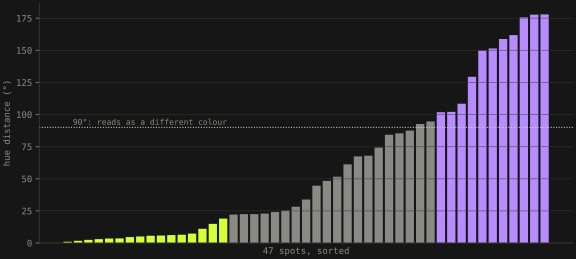
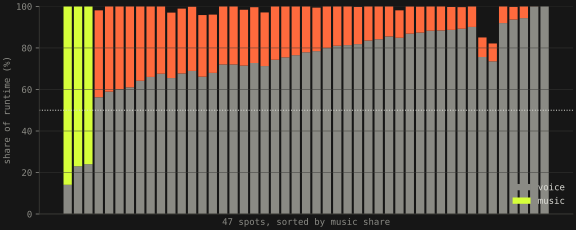
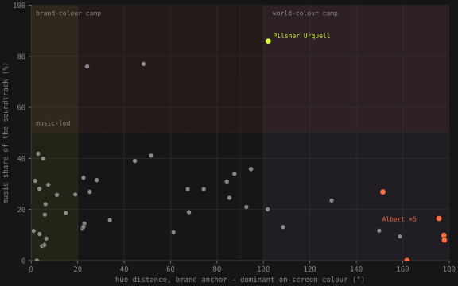

Brand Reflection Series · four artifacts · spring 2026 · open source
Strategy decks talk about brand. This measures it.
Forty-seven Czech TV spots from thirteen brands, read three ways: what colour the picture actually commits to, whether voice or music carries the sound, and what a language model sees when it reads the homepage instead of the brief. Then a tool that scores any spot URL against its sector, and one prediction I wrote down before the data came in.
- spots · brands · frames
- 47 · 13 · 2 351 one frame per second, K-means in CIE-LAB
- colour: brand-led · muddle · world-led
- 16 · 20 · 11 by hue distance to the brand anchor
- sound: voice-led · music-led
- 44 · 3 Pilsner, and two McDonald's image spots
- homepages: banks + ČEZ + Škoda
- one cluster 8 brands, 4 sectors, 1 register
Brand positioning is usually asserted in a deck and never checked against what the brand puts on screen. The series checks. Each piece answers one question with one technique, each has a reproducible pipeline (fetch → extract → measure → render), each publishes its derived metrics, and none redistributes the source material1. It was built across a few weekends to see what competitive brand analysis looks like when it starts from public data instead of pitch decks.
Episode 1 · Brand colour, or world colour?
A spot's picture either commits to the brand colour or commits to a world. Sample every spot at one frame per second, take the five dominant colours per frame with K-means in CIE-LAB, find the spot's dominant chromatic hue, and measure the angle on the hue wheel between it and the brand's own anchor swatch. Beyond about 90° the two are, perceptually, different colours2.
Sixteen spots sit under 20°: Lidl, Penny, T-Mobile, Vodafone flood the screen with their colour. Eleven sit over 100°: Albert's five spots at 150–178°, Komerční banka, AAA Auto, Pilsner Urquell, whose brand green occupies 0.2 % of the picture. Twenty sit in between, and that middle is the finding: most Czech spots are not choosing. AAA Auto's brand yellow occupies 0.001 % of screen time; the picture is a used-car catalogue in greys and browns, with a logo on it2.

Is that just sector? Hierarchical clustering on the energy distance between every pair of brands' weighted LAB palettes says no: brands cluster across sector boundaries by their colour signature, not by what they sell. Saturation tension, the spread of saturation across a spot, is a second axis that does split by category, banking and automotive flat, performative formats swinging2.
Episode 1.5 · Voice, or music?
Same 47 spots, audio only. Voice activity with silero-vad, tempo by beat tracking, key by Krumhansl–Schmuckler correlation, brightness and dynamics with librosa. Voice-led means more than half the runtime is speech3. The result is a cliff: 44 spots are voice-led, three are music-led, none is mixed. Pilsner Urquell's Alfons is 86 % music; two McDonald's image spots are 77 % and 76 %; the next spot down is 41 %. There is no music-led promotional spot in the corpus at all.

The defaults are narrow in every other dimension too: tempo lives in one band (110–140 bpm holds 23 of 47), and the mode skews minor, 27 of 47, even for retail promos3. Czech advertising diversifies how it looks and converges on how it sounds. "Music carries the spot" is a normal creative variable elsewhere; here it is essentially unused, which makes it cheap to occupy.
Episode 2 · How many Czech brand templates are there? Three.
Scrape the homepages of thirty major Czech brands (title, description, first headings, first paragraphs; 24 succeeded, 6 were behind anti-bot walls or empty, which is reported rather than hidden), embed them with a multilingual sentence model, reduce with UMAP, cluster. Put rising Czech search queries into the same space4.
The map's boundaries do not match the sectors. ČSOB, Česká spořitelna, Fio, Air Bank, Komerční banka, Generali, ČEZ and Škoda Auto land in one neighbourhood: five banks, an insurer, a utility and a carmaker, one institutional register. The words that define that neighbourhood against the other three are banka, škoda, čez, fio, česká. A challenger bank's positioning, "the bank that is different from Komerční", is decided in the campaign layer and quietly undone in the homepage layer. With 54 points UMAP coordinates are approximate topology, not distances; the opportunity scoring is done in the original 768 dimensions, and the page says so4.
The tool, and the one brand that commits twice
Spot Scorer takes the two pipelines and turns them into something a strategist can use on Monday: pick a spot, see its colour and audio metrics against the sector median, and the four or five numerical targets it would have to hit to leave its category default. Paste any YouTube, Facebook or Instagram URL and a Modal backend runs the full pipeline in about 25 seconds5.
Put the two commitments on one plane and the corpus reads itself. Most spots commit on one axis and hedge on the other. Pilsner's Alfons is the one spot that commits to a world by picture (102°, brand green at 0.2 %) and by sound (86 % music, 81 bpm, F♯ major) at once, two pipelines agreeing about one brand. Albert is the opposite: five spots that commit to a world visually (150–178°) and to a voiceover audially (88 % speech). Each decision is extreme on its own axis; the pair does not reinforce. That is the muddle's stealthiest form, decisive metric by metric, conflicted in motion1.

The prediction, checked late
On 18 May I wrote down a falsifiable claim before the data could answer it: five spots, three "coherent" (Pilsner, a McDonald's promo, a Lidl brand-colour flood) and two "muddled" (Albert, a Vodafone telecom spot), with the claim that over thirty days the coherent set would gain more YouTube views in total (claim A) and hold the top three ranks (claim B). The confounds were listed in the same file: existing views, subscriber base, paid promotion, the algorithm, all of which matter more than creative coherence, and n = 5. The check was due on 17 June. I forgot it. I ran it while writing this page, 119 days after the baseline67.
| spot | predicted | 18 May | 14 Sep | Δ views |
|---|---|---|---|---|
| Pilsner Urquell · Alfons | top | 18 660 | 18 704 | +44 |
| McDonald's · Fakt si myslíš | top | 851 825 | 855 594 | +3 769 |
| Lidl · Vše pro skvělé grilování | top | 511 921 | private | unmeasurable |
| Albert · Gourmet receptury | bottom | 272 017 | 273 381 | +1 364 |
| Vodafone · Nejlepší pevný internet | bottom | 509 694 | 511 540 | +1 846 |
Claim A holds on paper, 3 813 against 3 210, and only because of McDonald's, whose spot rides the name of a television show and was flagged as confounded before the fact. Claim B fails: Pilsner, the most coherent spot in the corpus, gained 44 views in four months and finished last. The Lidl spot was taken private, which is its own answer about how long promo creative lives. The methodology measures the spot; YouTube measures the spot plus everything else. The series is descriptive, not predictive of reach, and the file said that too. What I would keep from the exercise is the habit, not the result: write the claim down first, with the ways it could be wrong, and run the check even when it is late.
References
- Šandová, B. (2026): Brand Reflection Series, hub with the worked Pilsner example and the Albert counter-example; repository, MIT.
- Šandová, B. (2026): Brand color or world color: a field study of Czech TV advertising; color-fingerprint-cz. 47 spots from 13 brand YouTube channels, 1 fps, K-means k = 5 in CIE-LAB, hue distance to the brand anchor, Székely energy distance between palettes. Derived metrics
data/processed/spots.parquet, CC-BY-4.0. - Šandová, B. (2026): Voice or music: a field study of Czech TV advertising's audio; sound-fingerprint-cz. silero-vad, librosa, Krumhansl–Schmuckler key finding;
spots_audio.parquet, CC-BY-4.0. - Šandová, B. (2026): Strategic topography of Czech brands; strategic-topography-cz. trafilatura,
intfloat/multilingual-e5-base, UMAP (n_neighbors 10, min_dist 0.3, cosine), K-means k = 4; 24 of 30 homepages scraped, 30 trends via manual fallback when the unofficial Trends API rate-limited. - Šandová, B. (2026): Spot Scorer; spot-scorer. Static page with inline JSON; optional Modal backend for scoring any public video URL.
- PREDICTIONS.md (18 May 2026): the two claims, the five spots, the confounds; BASELINE_2026-05-18.txt: view counts at prediction time.
- Check run 14 September 2026, 19:52 UTC,
yt-dlp --skip-download --print "%(id)s %(view_count)s"on the five URLs; LidlOz047619h6Ureturned "Private video".